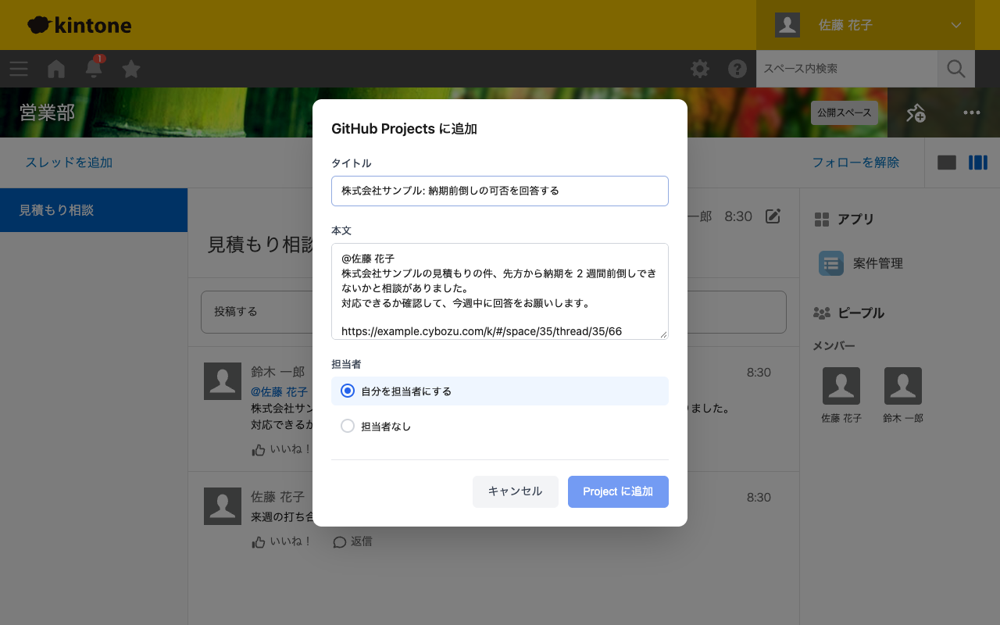
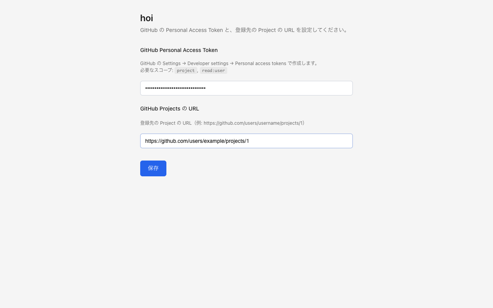

hoi
kintone などの画面で選択したテキストを、元ページへのリンク付きで GitHub Projects に Draft Issue として登録する Chrome 拡張機能です。

機能
- ショートカットひとつで登録 テキストを選択して ⌘ ⇧ G（Windows は Ctrl Shift G）を押すだけで、登録用のダイアログが開きます。
- 元ページへのリンク付き 本文には、選択したテキストと、いま開いているページの URL が入ります。あとから元の情報にすぐ戻れます。
- kintone のコメントはパーマリンク スペースのスレッド、レコード詳細、通知画面でコメントを選択した場合は、そのコメントを直接開けるリンクを入れます。
- 担当者の設定 登録と同時に、自分を担当者にするかどうかを選べます。
インストール
-
GitHub のリリースから
hoi-X.Y.Z-chrome.zipをダウンロードして展開します。 - Chrome で
chrome://extensionsを開き、右上の「デベロッパーモード」を有効にします。 - 「パッケージ化されていない拡張機能を読み込む」をクリックし、展開したフォルダを選びます。
初期設定
1. GitHub の Personal Access Token を作る
- GitHub の Settings → Developer settings → Personal access tokens → Tokens (classic) を開きます。
- 「Generate new token (classic)」をクリックします。
-
スコープは
project（Projects の読み書き）とread:user（担当者の設定に使う自分の情報）を選びます。 - トークンを生成してコピーします。
2. 拡張機能に設定する
拡張機能のアイコンを右クリックして「オプション」を開き、トークンと、登録先の GitHub Projects の URL（例:
https://github.com/users/username/projects/1）を入れて保存します。

使い方
- Web ページ上でテキストを選択します。
- ⌘ ⇧ G（Windows は Ctrl Shift G）を押します。
- タイトルを入力し、必要なら本文と担当者を直します。
- 「Project に追加」をクリックします。
ショートカットは chrome://extensions/shortcuts で変更できます。
データの扱い
選択したテキストとページの URL は、「Project に追加」をクリックしたときにだけ、GitHub の API に送ります。それ以外のサーバーには送りません。トークンと Project の URL は、ブラウザの拡張機能用の保存領域（Chrome の同期の対象）に保存します。詳しくはプライバシーポリシーを見てください。